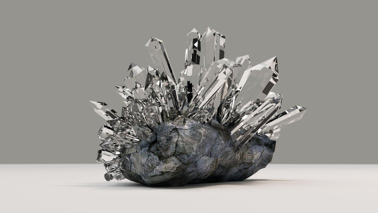
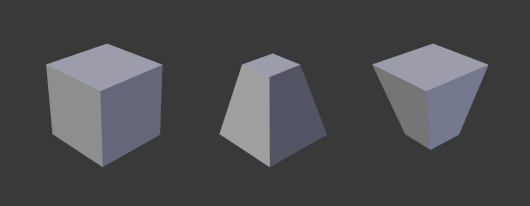
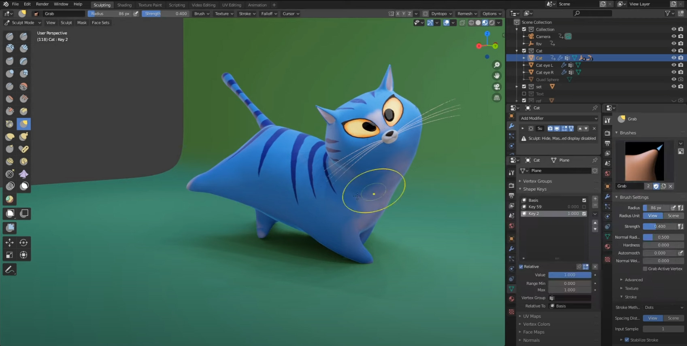
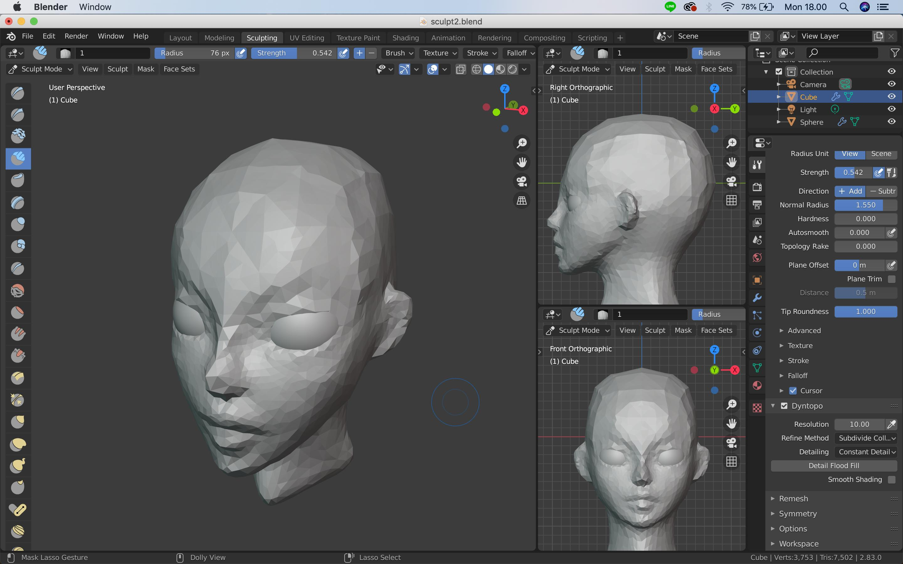

Basics: Absolute Beginners
The Basics of Blender 2.9 tutorial series is an optimal way for absolute novices to learn the nuts and bolts. From the website FilterGrade, which specializes in digital photography and design, this comprehensive, free tutorial is an excellent choice to start immersing yourself in Blender design.
Narrated in a clear, well-scripted manner, the tutorial starts out with the bare-bones 3D grid plane and launches into using controls, working with objects by selecting and adding them to the scene, and scaling. Users will also get the basics of using common tools like Inset, Bevel, and Loop Cut. With highly positive user feedback, this should be a go-to video for anyone looking to grasp the essentials of Blender 2.9.
- Price:Free
- Level:Beginner
- Biggest takeaway skill: Understand the fundamentals of Blender 2.9, such as setting up a project and basic rendering
- Where to view it: FilterGrade
- Length:Short, a little over 10 minutes
Blender 3.0 Beginner Tutorial
With the help of the ever-popular Blender Guru (a staple of Blender tutorials), users will get the rundown of the program’s basics, whether you’re new to Blender entirely or just to 3.0.
You’ll learn to create a delicious, sugary donut in Blender using all the necessary techniques, like texture sculpting and color, in a series of mini-tutorials that can be watched in sequence or even as separate units. It’s well-produced and very thorough, and will leave the user knowing all the Blender basics “musts”.

- Price:Free
- Level:Beginner
- Biggest takeaway skill: Understanding the changes specific to Blender 3.0 while grasping the fundamentals of the program, creating a donut
- Where to view it: Youtube
- Length:Lengthy, 12-part tutorial totaling around 5 hours
Basics: Comprehensive
Another excellent place to start is this series by CG Fast Track. Robby Branham, the brains behind CG Fast Track, is your voice of clarity and reason in this beloved two-part YouTube tutorial for Blender 2.9 beginners. It’ll walk you through essentials like scaling, adjusting properties, and working with meshes.
You’ll get right into important elements of Blender like lighting, as Robby uses a scene with pillars to give viewers some straightforward applications, and then moves into how to manipulate objects and duplicate elements in the scene. Part two deals with creating a sword in Blender, and part three goes over how to create a stone (think The Sword in the Stone). There’s also an approach to common problems pinned as the first comment – something to ease your way through the process, should you face any obstacles.
- Price:Free
- Level:Beginner
- Biggest takeaway skill: Master the basics like lighting, object selection, and manipulation
- Where to view it: Youtube
- Length:Long, all parts combined are over 3 hours of video
Rigging
In this popular Introduction to Rigging tutorial, users will get exactly that: a detailed three-part walk-through for beginners of the complex but essential skill of rigging a 3D character. Rigging makes your character posable, critical for simulations and animating.
This particular series is created by Lee Salvemini, a popular animator and instructor. Though you’ll need a bit of Blender experience, Salvemini breaks it down for you. It goes through all the basics, such as making shoulder, arm, and leg animation-ready, creating a hand rig, applying custom bone shapes, and managing bone layers. Salvemini’s clear guidance is well-loved by users and if you like his teaching, he’s also got other (paid) tutorials and DVDs available too.

- Price:Free
- Level:Advanced Beginner
- Biggest takeaway skill: Learn the essentials of rigging a character model
- Where to view it: Blender Guru
- Length:Long, all three parts combined are over 90 minutes of video
Rigging & Animation in Blender 3.0
Created in order to help users acclimate to the new version of Blender (3.0), this detailed tutorial focuses specifically on the new animation and rigging features of the software. The creator also offers additional free Blender courses that cover a variety of topics, such as the principles of animation and terrain blending.
The video tutorial includes important features, such as bone axis display and the new keying set, which will likely be unfamiliar to new users of the latest Blender update, and overall it’s very clearly made and its creator is responsive to comments and questions.
- Price:Free
- Level:All levels
- Biggest takeaway skill: Gain confidence with the new Blender 3.0 features in rigging and animation
- Where to view it: Youtube
- Length:Medium, around 17 minutes of video
Sculpting
If you want to try sculpting in Blender 2.9 once you’ve got the basics down, try this sculpting beginner tutorial. You’ll learn how to model an ear, which is a good place to start since the shape and structure are a bit detailed, but not excessively complex. As such, you’ll gain a lot of the fundamental skills that you will need to go on to sculpt other body parts and objects within the software.
Jayanam, the tutorial’s creator, walks you through the techniques using a 2D image of a basic human ear. You’ll see how to get into sculpt mode and use the various brushes, resolution adjustments, fine-tune details, and fix smaller errors with smoothing and geometric functions. The tutorial is very straightforward and easy to follow.

- Price:Free
- Level:Advanced beginner
- Biggest takeaway skill:Gain confidence in sculpting techniques
- Where to view it: Youtube
- Length:Short, around 6 minutes long
CREATING SPECIFIC ITEMS
Once you’ve gotten the basics of Blender, you’ll want to work on making certain items. Whether it’s to use models as tests for expanding specific skills or to improve your creation of a frequently used object, we’ve got some great options!
Some ideas:- Vases
- Cars
- Grumpy Toadstool
- Hair
- Forest